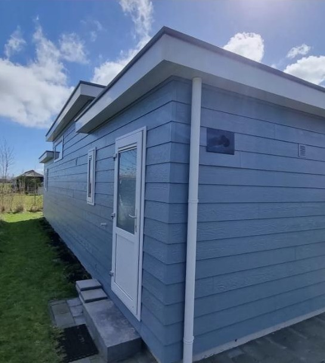
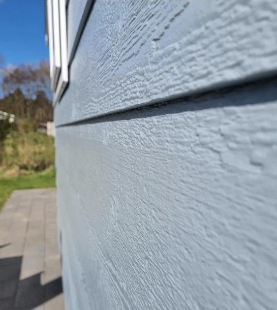

De kleur die op geen enkele waaier stond.
Voor een chalet op Vakantiepark De Bremakker werd de gewenste kleur nagemaakt aan de hand van een staal. Het resultaat: een zacht blauwgrijs dat past bij de omgeving, en een onderhoudsplan voor de komende 12 jaar.
- ProductJotun Demidekk Ultimate
- SoortWatergedragen houtbescherming
- KleurNagemaakt op staal
- Resultaat12 jaar onderhoudsvrij

Totale metamorfose van een vakantievilla.
Alle wanden en het houtwerk zijn opnieuw geschilderd: lichte wanden, antracietkleurig houtwerk en een glanzende afwerking die het geheel een frisse, strakke uitstraling geeft.
- OmvangAlle wanden & houtwerk
- KleurstellingLicht met antraciet
- AfwerkingGlans (Sigma S2U Allure Gloss)

Van wit naar warm donkerbruin.
Deze schuurdeuren konden wel een opfrisbeurt gebruiken. Eerst grondig schuren, alles netjes afplakken, en dan: kleur erop. Weer jarenlang strak beschermd.
- AanpakSchuren, afplakken, spuiten
- VanWit
- NaarWarm donkerbruin


Strakke gevels met een nette plint.
Of het nu een lichte gevel met een donkere plint is of een gevel met donker houtwerk: het gaat om de details en een afwerking die er netjes uitziet. Meer voorbeelden staan op Instagram.